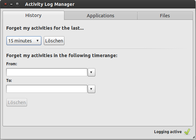
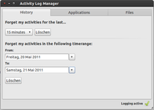
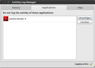
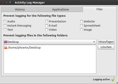

Zeitgeist Activity Log Manager
Dieser Artikel wurde für die folgenden Ubuntu-Versionen getestet:
Ubuntu 14.04 Trusty Tahr
Zum Verständnis dieses Artikels sind folgende Seiten hilfreich:
Der Zeitgeist Activity Log Manager  ist eine grafische Oberfläche zur Verwaltung von Zeitgeist. Hiermit lassen sich z.B. die zuletzt geöffneten Dateien verwalten. Besonders interessant dürfte die Funktion sein, bestimmte Ordner oder Programme nicht mit einzubeziehen (Blacklisting). Als grafische Oberfläche zur Abfrage von Zeitgeist kann alternativ das GNOME Activity Journal dienen.
ist eine grafische Oberfläche zur Verwaltung von Zeitgeist. Hiermit lassen sich z.B. die zuletzt geöffneten Dateien verwalten. Besonders interessant dürfte die Funktion sein, bestimmte Ordner oder Programme nicht mit einzubeziehen (Blacklisting). Als grafische Oberfläche zur Abfrage von Zeitgeist kann alternativ das GNOME Activity Journal dienen.
Zeitgeist selbst gehört ab Ubuntu 11.04 zur Standardinstallation von Ubuntu und findet insbesondere unter der Desktop-Oberfläche Unity Verwendung.
Installation¶
Der Zeitgeist Activity Log Manager kann aus den offiziellen Paketquellen installiert [1] werden:
activity-log-manager (universe)
 mit apturl
mit apturl
Paketliste zum Kopieren:
sudo apt-get install activity-log-manager
sudo aptitude install activity-log-manager
Verwendung¶
Das Programm kann bei Ubuntu-Varianten mit einem Menü über den Eintrag "Zubehör -> Activity Log Manager" gestartet werden.
Die Optionen des Activity Log Managers sind auf drei Reiter verteilt:
"Zuletzt verwendet"
In diesem Reiter kann man entweder die letzten x Minuten/Stunden der Chronik löschen oder einen bestimmten Zeitbereich, z.B. Dienstag bis Donnerstag vorletzter Woche.
"Dateien"
Hier kann über einfaches Anklicken der Checkboxen die Überwachung ein oder mehrerer Dateitypen verhindert werden, wie beispielsweise alle Präsentationsdateien. Oder Dateien, die aus bestimmten Ordnern geöffnet werden, werden nicht berücksichtigt. Beispiel: alle Dateien, die im Ordner Desktop liegen.
"Anwendungen"
An dieser Stelle können bestimmte Anwendungen aus der Chronik herausgelassen werden. Zum Beispiel speichert Zeitgeist keine Dokumente, die mit dem Adobe Reader geöffnet werden.
|  |
| Verwendete Dateien löschen für die letzten ... |
|  |
| Verwendete Dateien löschen im Zeitraum ... |
|  |
| Auszuschließende Anwendungen eingeben |
|  |
| Auszuschließende Ordnerpfade eingeben |
Links¶
Zeitgeist Activity Log Manager now available
- Artikel WebUpd8, 05/2011Zeitgeist
 Übersichtsseite
Übersichtsseite
- Erstellt mit Inyoka
-
 2004 – 2017 ubuntuusers.de • Einige Rechte vorbehalten
2004 – 2017 ubuntuusers.de • Einige Rechte vorbehalten
Lizenz • Kontakt • Datenschutz • Impressum • Serverstatus -
Serverhousing gespendet von